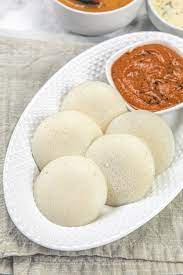

Idli

Idli is a traditional South Indian breakfast dish made from fermented rice and black lentils batter.
These soft, fluffy steamed cakes are light on the stomach and packed with nutrients.
Idlis are typically served with an assortment of accompaniments such as coconut chutney, sambar, and a variety of spicy powders called podi.
Known for their simplicity and ease of digestion, idlis are a staple in many Indian households and are often enjoyed as a wholesome breakfast or snack.
Ingredients
- Idli Rice - 2 cups
- Urad Dal (Black Gram Lentils) - 1 cup
- Fenugreek Seeds - 1 teaspoon
- Salt - to taste
- Water - as needed for soaking and grinding
- Oil or Ghee - for greasing the idli molds (as needed)
Steps
- Soak 2 cups of idli rice and 1 teaspoon of fenugreek seeds together, and 1 cup of urad dal separately for 4-6 hours.
- Drain and grind urad dal to a smooth paste, grind rice and fenugreek seeds to a smooth paste, then mix both pastes together.
- Let the batter ferment overnight or for 8-12 hours until it doubles in volume.
- Add salt to the fermented batter and mix gently.
- Pour batter into greased idli molds and steam for 10-15 minutes.
- Remove idlis from molds and serve hot with chutney and sambar.